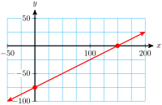

The man represented by point \(A\) has shoe size \(11 \frac{1}{2}\) and is \(73 \frac{1}{2}\) inches tall.
There are two men with shoe size 9, with heights 68 and 73 inches. There are also two men with shoe size \(9 \frac{1}{2}\text{,}\) with heights 68 and 71 inches.
We draw a line that lies as close as possible to all of the data points. As a rule of thumb, we try to keep equal numbers of points on each side of the line.
The solution must lie on both graphs, so it is the intersection point, \(P\text{.}\) The coordinates of point \(P\) are \((50, 1300)\text{,}\) so the solution of the system is \(t=50,~y=1300\text{.}\)
The Earth Alliance made $6000 in revenue from selling tickets to Earth Day, an educational event for children. Write an expression for their profit in terms of their costs.
Some familiar formulas are useful in writing equations to solve a problem.
SubsubsectionA.2.3.1Use the interest formula, \(I=Pr\)
ExampleA.2.19.
You have $5000 to invest for one year. You want to put part of the money into bonds that pay 7% interest, and the rest of the money into stocks that involve some risk but will pay 12% if successful. Now suppose you decide to invest \(x\) dollars in stocks and \(y\) dollars in bonds.
Use the interest formula, \(I=Pr\text{,}\) to write expressions for the interest earned on the bonds and on the stocks.
Write an equation about the amount invested.
Write an equation to say that the total interest earned was $400.
Mort invested money in two accounts, a savings plan that pays 8% interest and a mutual fund that pays 7% interest. He put twice as much money in the savings plan as in the mutual fund. At the end of the year Mort’s total interest income was $345. How much did he invest in each account?
Use the interest formula to write expressions for the interest Mort earned on the savings plan and the interest he earned on the mutual fund.
SubsubsectionA.2.3.2Use the percent formula, \(P=rW\)
ExampleA.2.21.
A pharmacist has on hand a solution of a certain medication at 40% strength, but she needs 48 ounces of the medication at 75% strength for a prescription. She decides to add a pure form of the medication to the 40% solution. How much of the each strength solution should she add to make a mixture of 75% strength?
Choose variables for the unknown quantities.
Write an equation about the amount of 75% solution.
Use the percent formula, \(P=rW\text{,}\) to calculate the amount of the medication in the original solution.
Use the percent formula to calculate the amount of the medication in the mixture.
A pet store owner wants to mix a 12% saltwater solution and a 30% saltwater solution to obtain 90 liters of a 24% solution. He uses \(x\) quarts of the 12% solution and \(y\) quarts of the 30% solution.
Write an equation about the total amount of saltwater.
Use the percent formula to write expressions about the amount of salt in each original solution.
SubsubsectionA.2.3.3Use the distance formula, \(d=rt\)
ExampleA.2.23.
A river steamer requires 3 hours to travel 24 miles upstream and 2 hours for the return trip downstream. Let \(x\) be the speed of the current and \(y\) the speed of the steamer in still water.
A yacht leaves San Diego and heads south, traveling at 25 miles per hour. Six hours later a Coast Guard cutter leaves San Diego traveling at 40 miles per hour and pursues the yacht. Let \(x\) be the time it takes the cutter to catch the yacht, and \(y\) the distance it traveled.
Write a 3x3 linear system for the following problem:
Ace, Inc. produces three types of wooden rackets: tennis rackets, Ping-Pong paddles, and squash rackets. After the pieces are cut, each racket requires three phases of production: gluing, sanding and finishing. A tennis racket takes 3 hours to glue, 2 hours to sand, and 3 hours to finish. A Ping-Pong paddle takes 1 hour to glue, 1 hour to sand, and 1 hour to finish. A squash racket takes 2 hours to glue, 2 hours to sand, and 2.5 hours to finish. Ace has available 95 labor-hours for gluing, 75 labor-hours for sanding, and 100 labor-hours for finishing per day. How many of each racket should it make in order to use all the available time?
Let \(x\text{,}\)\(y\text{,}\) and \(z\) stand for the number of tennis rackets, Ping-Pong paddles, and squash rackets, respectively. Write three equations about the number of hours needed for each phase:
Write a 3x3 linear system for the following problem:
A box contains $6.25 in nickels, dimes, and quarters. There are 85 coins in all, with 3 times as many nickels as dimes. How many coins of each kind are there?
We begin just as we do to solve an equation. The only difference is that we must reverse the direction of the inequality if we multiply or divide by a negative number.
\begin{align*}
3k-13 \amp \lt 5+6k \amp \amp \blert{\text{Subtract}~6k~\text{from both sides.}} \\
-3k \amp \lt 18 \amp \amp \blert{\text{Divide both sides by}~-3.}\\
k \amp \gt -6 \amp \amp \blert{\text{Don't forget to reverse the inequality.}}
\end{align*}
In interval notation, the solution set is \((-6,\infty)\text{.}\)
This equation is in the form \(Ax+By=C\text{,}\) so the intercept method of graphing is convenient. The intercepts are \((150,0)\) and \((0,-75)\text{.}\) The graph is shown below.

This equation is in the form \(y=mx+b\text{,}\) so the slope-intercept method of graphing is convenient. The \(y\)-intercept is \((0,400)\text{,}\) and the slope is \(-25\text{.}\) The graph is shown below.
We start by solving the second equation for \(x\) to get \(x=2y-2\text{.}\) Then we substitute this expression for \(x\) into the first equation, which gives us
\begin{equation*}
3y-2(2y-2)=3
\end{equation*}
We solve this equation for \(y\) to find \(y=1\text{.}\) Finally, we substitute \(y=1\) into our first step to find
\begin{equation*}
x=2(1)-2=0
\end{equation*}
The solution is \(x=0,~y=1\text{,}\) or \((0,1)\text{.}\)
Adding these two equations gives us \(-y=1\text{,}\) or \(y=-1\text{.}\) Finally, we substitute \(y=-1\) into either equation (we choose the first equation), and solve for \(x\text{.}\)